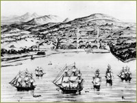
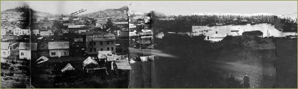
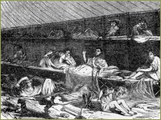
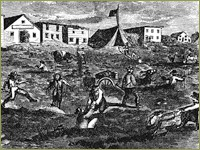
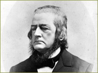
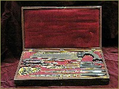
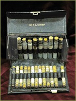

Prelude: The California Gold Rush
Any history of the health professions involving a boomtown like San Francisco would have to take into account the unique geographical and social environment created by the Gold Rush. In 1846 San Francisco was a colony of around 200 people called Yerba Buena. A year later the population had grown to 457, and most of these were men under forty, including one minister, three doctors, three lawyers, and one schoolteacher.

On January 24, 1848, a worker found gold nuggets in the millrace at John Sutter's encampment on the American River, setting off a decade-long nationwide wave of "Gold Fever." On February 2, 1848, President Polk signed the Treaty of Guadalupe Hidalgo with the Mexican government, transferring the Mexican lands, including California, to the U. S. for 15 million dollars. The Treaty was proclaimed on June 19th, but news did not reach California until August of 1848. That same month news of the gold discovery reached the East, and by November the first ship carrying goldseekers left the east coast. Twenty-five years later, when the Colleges of Pharmacy and Medicine officially affiliated with the University, San Francisco’s population had swelled to 183,723
View of San Francisco: San Francisco before the Gold Rush, March 1847, with Montgomery Street bordering the bay.
A City of Transients

Forest of Masts: Panoramic View of San Francisco, ca 1850s. Left to right: Nob Hill, Russian Hill, Telegraph Hill; and far right: a harbor full of abandoned ships.

Already by 1849, San Francisco had been transformed into a chaotic city of 40,000, with 4,000 immigrants arriving by ship each month. Abandoned ships cluttered the harbor and most of the available lumber was used to build saloons. Citizens lived in cellars and makeshift tents crowded into the flatlands that surrounded the bay. Health conditions were frightful, with a third of the deaths caused by diarrhea and dysentery. Malnutrition, scurvy, malaria, and typhus fever were also prevalent and the population was subjected to deaths from starvation, exposure, murder, executions, and various wounds and accidents. To make matters worse, in autumn of 1850, cholera arrived in California, brought in by ship, just in time to mar any celebration of statehood. One physician observer estimated that from 1851 to 1853, one of every five persons reaching California died within six months of arrival. Artist’s depiction of lodging conditions in San Francisco, ca. 1850s.

By 1855 over 150,000 persons had come to seek gold in California, swelling the new state's population, and San Francisco became a full-fledged city of over 60,000 served by nearly 2,000 dentists, physicians, and pharmacists with varying credentials.
Street Conditions in San Francisco during the Gold Rush.
Coming To California
From the beginning, physicians, pharmacists, and dentists were as enthusiastic about seeking their fortunes as most other prospectors. California’s early dentists provided their services to the throngs of gold miners. Dr J. Foster Flagg, one of the early forty-niners, studied dentistry in the eastern US and arrived in San Francisco in late 1849. He described his outdoor workspace in a mining community, “my chair is a barrel cut in this wise, with a stick with head rest attached. The lower half of the barrel stuffed firmly with pine needles and covered with a strong potato sack, over which I had an elegant cover of striped calico. A tin cup of water sufficed to rinse the mouth, and the patient, from force of habit, spit on the floor of the office— which was the ground.”
Dr. Hans Herman Behr, a German-educated physician-naturalist and student of Alexander von Humboldt, came to San Francisco in 1851. He found his intellectual treasure in studying the flora and fauna of California. Preferring botany to medical practice, he served on the faculty of the California College of Pharmacy for its first two decades.

In 1852, South Carolina surgeon Dr. Hugh H. Toland joined a wagon train heading west in search of gold and a healthier climate for his ailing wife, who died just days after their arrival in California. After a few discouraging months as a miner, Dr. Toland realized that his medical knowledge was potentially more profitable than his mill, so he sold his claim and headed to the coast to establish a surgical practice in booming San Francisco.
Portrait of Hugh Toland
Toland located his office near the waterfront at Montgomery and Merchant Streets and within months became the city's foremost surgeon, managing what was reportedly the largest practice on the West Coast. His interest in pharmacy and his experience in the mining camps prompted him to devise packaged medicines which he shipped to the mines by Wells Fargo messengers.

His favorite remedies were labeled "anti-scrof" (iodide of potash) and "anti-syph" (mercury with a dash of lobelia) to treat the miners' most common problems: tuberculosis and syphilis.
This 19th-century surgical kit contained nine instruments including a charriere saw, four knives, a hook, a bone cutter, dressing forcep, two needles, a cloth, and brass tourniquet.

Toland's fame often thrust him into controversy and he soon ran afoul of his colleague, Dr. R. Beverly Cole, a Philadelphia-trained physician who also came to California in search of gold. In 1856 Dr. Toland was called to attend a wounded newspaper editor, and medical judgment and vigilante justice became entwined in the famous Sponge Case. As the Sponge Case demonstrated, the medical milieu in San Francisco at mid-century was a mix best described by the state medical society president, who wrote in 1858, "We are a heterogeneous mass, an army of incompatibles. No country in the world is supplied with physicians so diverse in character. We have all the peculiarities of all the schools in the world, coupled with all the peculiarities of all the nations in the world."
This portable medical kit belonged to Dr. F. L. Miner. It contains such 19th-century remedies as chloral hydrate, chloroform, and potassium bromide.
>> San Francisco’s First Medical Institutions: Hospitals and Pesthouses
{% include footer.html %}